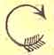

Near the right hand end of the bed plate of the machine will be found the stitch thumb screw No. 99 1/2, as shown above. To lengthen the stitch, turn the thumb screw to the right, thus,
.
To shorten the stitch, turn to the left, thus,
Raise the needle bar to its highest point, lift the presser foot and turn it back out of the way, loosen the screw No. 41, and remove the needle.
Hold the needle between the thumb and the index finger of the left hand, and pass the point down through the needle hole in the throat plate; then enter the shank of the needle in the hole in the lower end of the needle bar, and push the needle up until the lower part of the shank at S (Fig. 15, page 16) is even with the lower end of the needle bar, and fasten it in its place with the screw No. 41.
Be very careful to have the short groove of the needle next to the shuttle; remove both slides Nos. 112 and 113 (see Fig. 14, page 15); thread the needle from left to right, so that the thread will run across the centre of the throat plate, as shown in Figs. 10 and 14, pages 12 and 15; turn the driving-wheel from you until the needle descends to its lowest point.
By continuing this movement the needle will raise about one-eighth of an inch, at the same time throwing out a loop of thread squarely into the shuttle race, through which the shuttle will pass.
If your needle is set right, the bottom of this loop and the eye of the needle will be even with the bottom of the shuttle race, as shown in Fig. 16, page 16. For fine thread, the needle may be set a trifle higher, until the point of the shuttle enters the largest part of the loop.
If the needle is improperly set it may throw the loop to one side, so that the shuttle will pass by instead of through the loop. To prevent this, turn the needle in opposite direction until it throws the loop full into the shuttle race. Sometimes the machine will miss stitches because the needle sets too far from the shuttle, and at other times the shuttle will strike the needle because the needle sets into the shuttle race.
To adjust the needle nearer to or further from the shuttle, place the wrench 198 (Fig. 16, page 16) on the head of the screw No. 28, and press it downwards; this will loosen the screw, so that the head of the machine can be moved.
To adjust the needle nearer to the shuttle, move the end of the adjusting cam (27) up and then turn the screw (28) back into its place.
To adjust the needle farther from the shuttle, move the adjusting cam (27) downwards and tighten the screw, as before. The needle should set as near the shuttle as possible without striking it.
NOTE -- The adjustment referred to above is only necessary in changing from fine to coarse needles.
Before commencing to sew, always be careful to have some tension upon each thread. Try them with the hand to see that they pull as nearly alike as possible.
If the threads are of the proper size, having the right and equal amount of tension upon them, they will be drawn and locked together in the centre of the material, thus If the shuttle tension is tight and the upper tension too loose, the under thread will lie straight, thus, . On the contrary, if the upper tension is tight and the lower tension too loose, the upper thread will lie straight, thus, . Therefore, in order to make a perfect stitch on both sides of the material, it is necessary to have the tensions as nearly equal as possible, and tight enough only to make a firm seam without breaking the threads.
To tighten the tension on the upper thread, turn the tension thumb nut 128 to the right, thus,
To loosen it, turn to the left, thus,
To tighten the lower or shuttle tension, turn the small screw No. 70, near the point of the shuttle,
to the left, thus,
To loosen, turn it to the right, thus,
In changing the shuttle tension, which is seldom necessary, turn the screw but very little.
NOTE -- Remember the shuttle tension screw No. 70 is a left hand screw, and operates the reverse of ordinary screws.
NOTE -- In sewing heavy garments, they must be held so as not to pull back on the feed, or the stitches will be irregular.
When the machine is in operation, do not pull upon the goods so as to bend or break the needle.
The machine being fully threaded, both above and below, the shuttle thread drawnup through the throat plate 109, the needle bar and presser foot both at their highest point, slacken the thread, as shown at A, Fig. 18, page 20, and draw it through the eye of the needle, so as to leave an end about two or three inches long. Draw the shuttle thread up through the throat plate about the same distance, pass the two ends BB under the presser foot towards the back part of the machine, as shown in Fig. 18.
Attach the gauge No. 201 to the bed plate of the machine by means of the screw under the needle far enough to the right to make a seam of the proper width.
Let down the presser foot upon the work, move up the gauge to the edge of the goods, and fasten it there with the thumb screw No. 202; start the machine, holding the ends of the threads down until two or three stitches have been taken; then remove the hand from the threads and proceed with the sewing, the goods being kept even with their edges against teh gauge. If the tensions are right, the stitch will be alike on both sides of the material.
On reaching the end of the seam, stop the machine, with the needle at its highest point.
Take hold of the thread at A and slacken it, by drawing about two inches off from the spool, raise the presser foot, take hold of the work, raise it up and draw it gently from you towards the back of the machine, keeping the upper thread in the notch in the presser foot to avoid bending the needle, as shown above. Cut the threads about two inches from the needle.
NOTE -- If the shuttle thread should break in taking the work out, it will be an indication that the shuttle tension is too tight, and should be loosened a little.